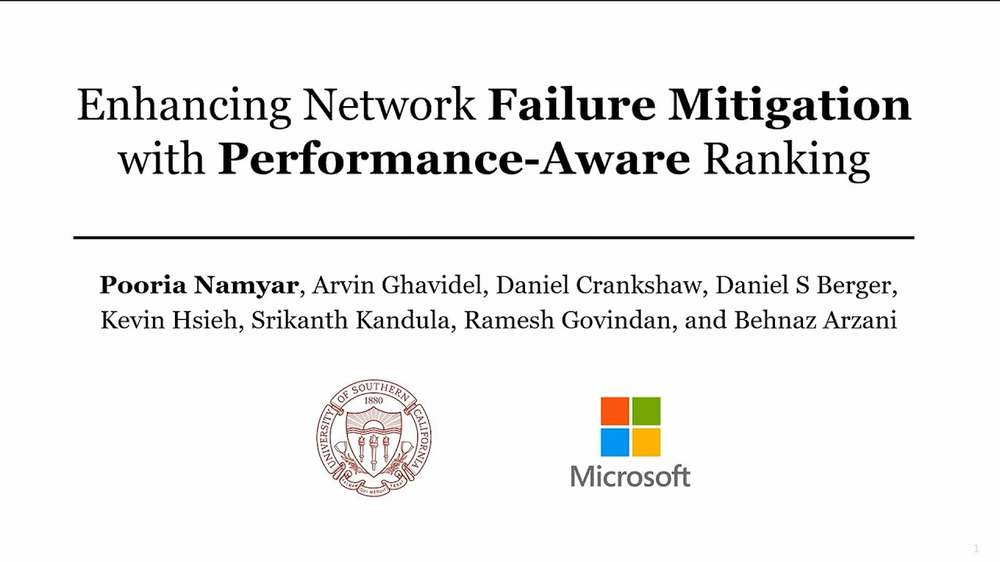
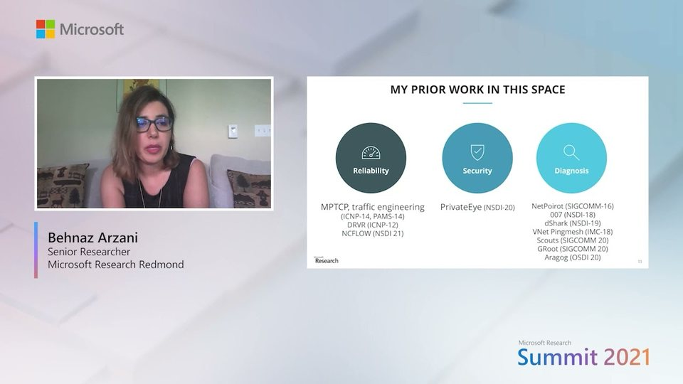
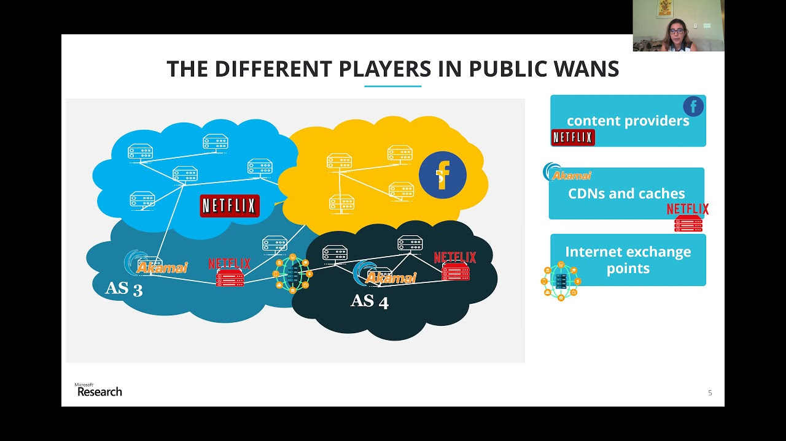
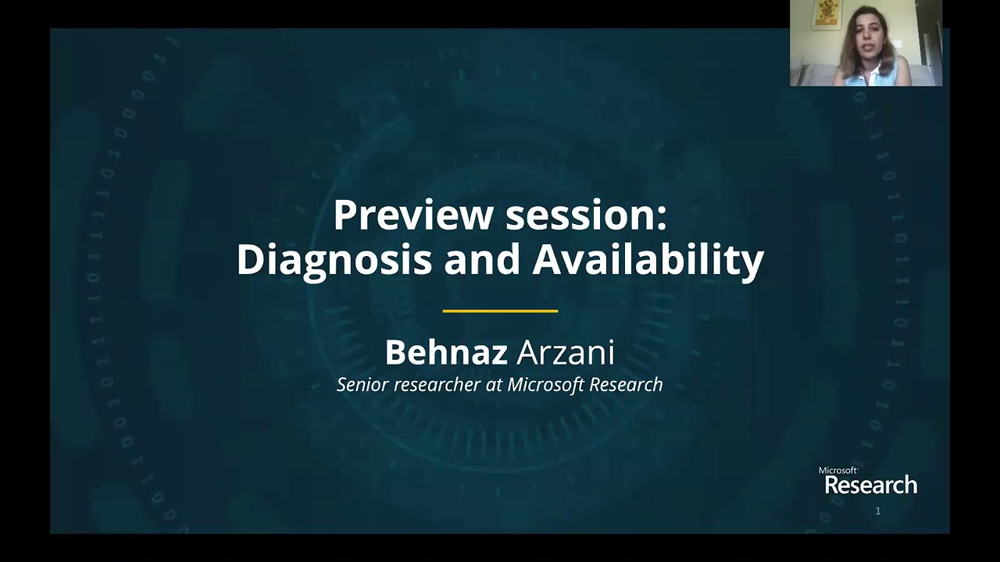
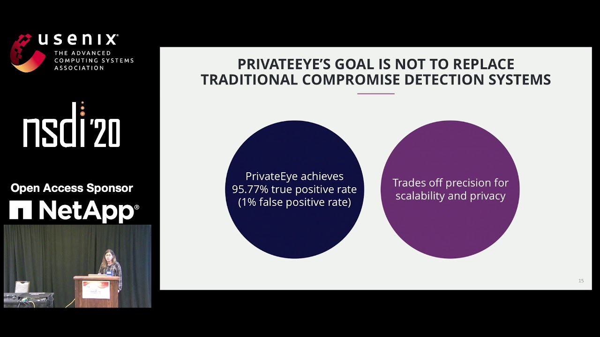
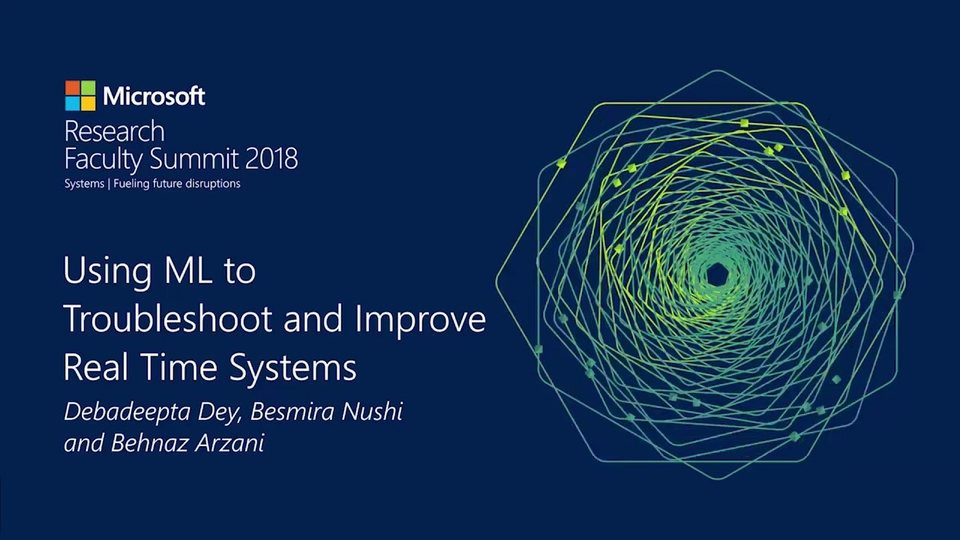
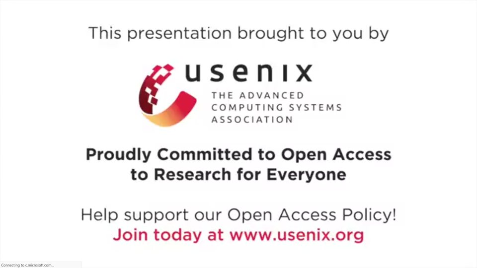
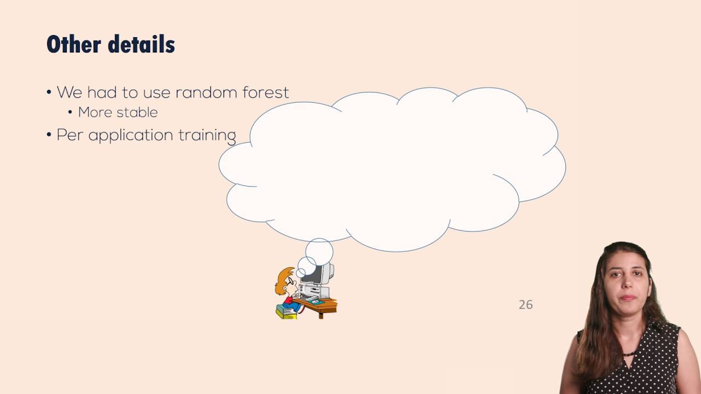

Videos
Videos
-

NSDI '25: Enhancing Network Failure Mitigation with Performance-Aware Ranking
16:12 · June 11, 2025
Pooria Namyar, Arvin Ghavidel, Daniel Crankshaw, Daniel Berger, Kevin Hsieh, Srikanth Kandula, Ramesh Govindan, Behnaz Arzani
-

Research talk: Revisiting data center management: Moving towards self-managed data center networks
06:34 · October 19, 2021
Behnaz Arzani
-

-

-

NSDI '20: PrivateEye: Scalable and Privacy Preserving Compromise Detection in the Cloud
17:18 · March 25, 2020
Behnaz Arzani, Selim Ciraci, Stefan Saroiu, Alec Wolman, Jack W. Stokes, Geoff Outhred, Lechao Diwu
-

Research in Focus: Using ML to Troubleshoot and Improve Real Time Systems
17:37 · August 1, 2018
Behnaz Arzani, Debadeepta Dey, Besmira Nushi
-

-
